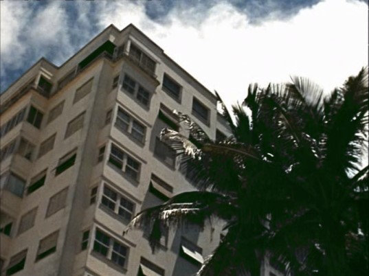
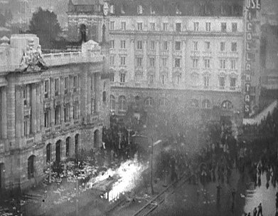
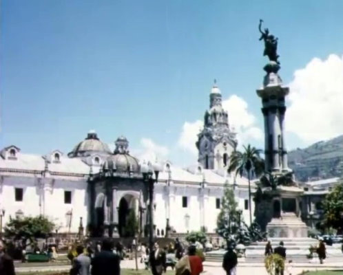
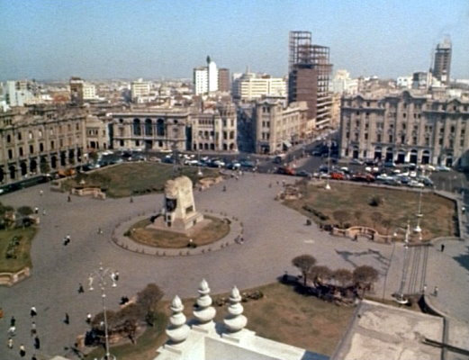
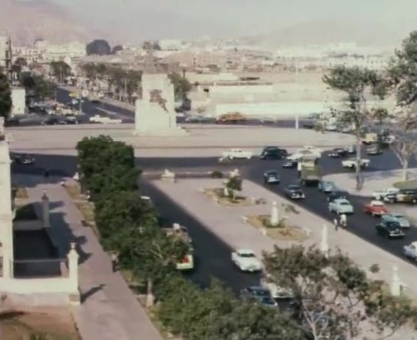
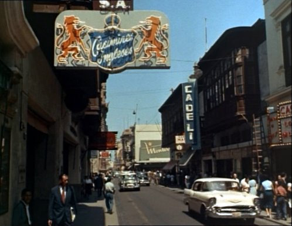
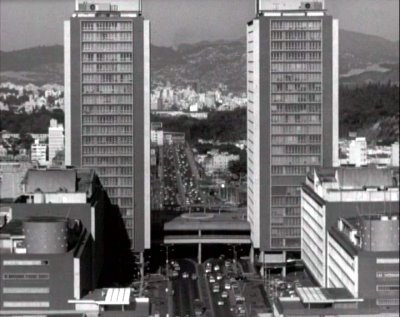

SOUTH
AMERICA
ARGENTINA
Buenos Aires
Casa Rosada

THE
SAINT: The Romantic
Matron (John Paddy Carstairs:1962)
Simon Templar is visiting Buenos Aires.
(Identified by Sietse Postma, May 2022)
Plaza de Mayo

DANGER MAN: Two Birds with One Bullet (Peter Yates:
1965)
Riots after assassination of Doctor Shargis (stock fooatge of the coup
d'état on 4 June 1943).
(Identified by Sietse Postma, February 2025)
Río Negro
San Carlos de
Bariloche

THE SAINT: The
Russian Prisoner (Peter
Moxey: February 1966)
Simon Templar and Irma Jorovitch watch the house where Karel Jorvitch
is being held from across the lake (view from Llao Llao Hotel & Resort).
BRAZIL
Rio de Janeiro

DEPARTMENT S: The
Trojan Tanker
(Ray Austin: June 1968)
Establishing shot of Cannes (2440 Av. Atlântica, Copacabana).
(https://youtu.be/CabkU5TJxoM)
COLOMBIA
Bogotá

DANGER MAN:
Whatever Happened to George Foster?
(Don Chaffey: November 1964)
Riots in santo Marco are observed by John Drake (Avenida Jimenez de
Quezada aka Calle 15) (http://youtu.be/FFIre7C9ONo)
(Spotted by Paul Stroud, May 2014)
Santander
San Vicente de Chucurí

DANGER
MAN: Two
Birds with One Bullet (Peter Yates: 1965)
John Drake has been
installed in a British Colony to investigate the methods and intentions
of the
nationalists led by Doctor Shargis.
(Identified by Sietse Postma, February 2025)
ECUADOR
Quito

DANGER MAN: Someone
is Liable to Get Hurt
(Michael Truman: October 1965)
Drake travels to South American country to expose plans of Doctor
Sawari (Plaza de la Independencia/Plaza Grand)
(https://youtu.be/9eVQClY6Ego?t=322)
EL SALVADOR
Sonsonate
Municipal Palace of
Sonsonate, Avennue Claudia Lars

DANGER
MAN: The Mercenaries
(Don Chaffey: 1964)
One of various stock shots to represent the African ‘Confederation’ and
its neighbour.
(Identified by Sietse Postma, May 2022)
PERU
Lima
THE SAINT: Locate
and Destroy (Cyril
Frankel: July 1966)
Simon Templar is in Lima and is visiting a local antiques shop when
adventure finds him (establishing
shot of Plaza Grau, Plaza San Martin and a shop on the Jirón
de la Unión). (https://youtu.be/9eVQClY6Ego?t=469)
Plaza San Martin
THE SAINT: Locate
and Destroy (Cyril
Frankel: July 1966)
Simon Templar is in Lima and is visiting a local antiques shop when
adventure finds him (establishing
shot of Plaza Grau, Plaza San Martin and a shop on the Jirón
de la Unión). (https://youtu.be/9eVQClY6Ego?t=469)

Plaza Grau
THE SAINT: Locate
and Destroy (Cyril
Frankel: July 1966)
Simon Templar is in Lima and is visiting a local antiques shop when
adventure finds him (establishing
shot of Plaza Grau, Plaza San Martin and a shop on the Jirón
de la Unión). (https://youtu.be/9eVQClY6Ego?t=469)

Jirón de la Unión
THE SAINT: Locate
and Destroy (Cyril
Frankel: July 1966)
Simon Templar is in Lima and is visiting a local antiques shop when
adventure finds him (establishing
shot of Plaza Grau, Plaza San Martin and a shop on the Jirón
de la Unión). (https://youtu.be/9eVQClY6Ego?t=469)

Urubamba Province
Machu Picchu, Urubamba river valley
THE PRISONER: Many
Happy Returns (Patrick
McGoohan: March 1967)
Number
Six servant finds the village deserted so he goes for a drive beyond
the outskirts of the village and discovers the village is surrounded by
high mountains(footage from Pan American travelogue 'Continent of
Contrasts' https://youtu.be/9eVQClY6Ego).

VENEZUELA
Caracas

DANGER MAN:
Someone is Liable to Get Hurt
(Michael Truman: 1965)
Drake travels to South American country to expose plans of Doctor
Sawari (shots of Simón Bolívar Center and Santa Teresa Bascilica).
THE SAINT: Theresa
(Roy Baker: 1963)
Establishing shots of the Bureau of Special Investigations, Mexico City.
Return to Index